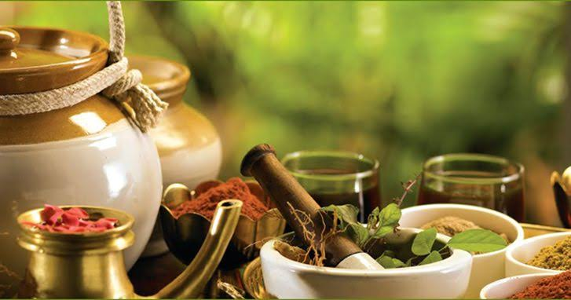

Integrating Ayurvedic methods into community service can be a valuable way to promote holistic health and wellness.
Here are some ideas for community service projects focused on Ayurveda:
1.Free Health Camps:
- Organize free health camps offering Ayurvedic consultations. - Provide basic Ayurvedic health check-ups, body type analysis, and personalized lifestyle recommendations.
2. Workshops and Seminars:
- Conduct workshops on Ayurvedic principles, diet, and lifestyle. - Teach the community about the benefits of Ayurvedic herbs, spices, and natural remedies.
3. Herbal Gardens:
- Create community herbal gardens where local residents can learn to grow and use medicinal plants. - Organize gardening sessions to educate people on the uses and benefits of different Ayurvedic herbs.
4. Diet and Nutrition Programs:
- Offer cooking classes focusing on Ayurvedic cuisine. - Provide guidance on creating balanced meals according to Ayurvedic dietary principles.
5. Yoga and Meditation Sessions:
- Host regular yoga and meditation sessions to promote mental and physical health. - Teach simple breathing exercises and mindfulness practices.
6. Ayurvedic Treatment Sponsorship:
- Raise funds to sponsor Ayurvedic treatments for underprivileged individuals. - Partner with local Ayurvedic practitioners to provide discounted or free treatments.
Ayurveda is from the Sanskrit word meaning “science of life. ” According to Ayurveda everything in life is interdependent. Thus, general health and wellness depend on balance and harmony. If one is imbalanced or stressed he/she will be prone to contracting a disease. Ayurveda aims at making modifications and using safe methods of natural treatments, therapies and remedies in order to restore perfect harmony of your body, mind, spirit and environment. “Traditional treatment systems like TCM and Ayurveda hold that every person possesses energy, “states Dr. Lin. “Chinese medicine labels this energy system chi while Ayurveda refers to the same as prana. ”It is obtained through proper nutrition, adequate sleep, exercise, and proper stress regulation. If desired, other treatments like botanicals, exercise, activities to enhance awareness, and others may help as well. It means that every person is different and Ayurveda identified individual’s particular type of body, or prakriti. Based on Ayurveda, these prakriti define one’s physical, psychological, behavioral and immunological characteristics. Everyone’s body is unique, and as such, what may help the one person might not help another person with a different constitution.
Advantages
• Improved overall health and well-being
• Relief from symptoms of chronic illnesses
• Prevention of disease
• Improved digestion
• Stress relief
• prevent from further side effects caused by the medicines
Disadvantge
• May not cure at the worst stage of diseases
• Side effect from herbs
• No immediate relief
• Prevention not for cure
• high in cost ,lack of availability
